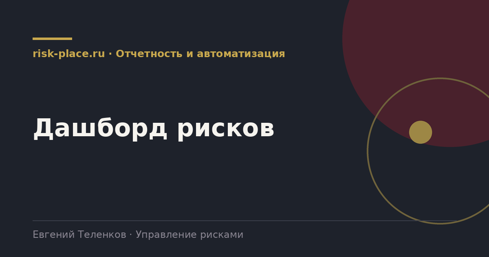

Главная · Библиотека · Отчетность и автоматизация · Дашборд рисков
Библиотека · Отчетность и автоматизация
Дашборд отвечает на вопрос руководителя за десять секунд. Если дольше, это не дашборд, а отчет в другом оформлении.

Проверенный набор, помещается на один экран.
Их часто путают и делают одно вместо другого.
| Признак | Дашборд | Отчет |
|---|---|---|
| Назначение | Быстрый ответ на вопрос, как дела | Основание для решения по конкретному вопросу |
| Периодичность | Доступен всегда, обновляется автоматически | Готовится к заседанию |
| Глубина | Показатели верхнего уровня с возможностью раскрытия | Полное описание ситуации и вариантов |
| Автор | Формируется системой | Пишется человеком |
| Что содержит | Числа и графики | Числа, интерпретацию и предложения |
Техническая часть здесь вторична. Дашборд можно собрать хоть в таблице, хоть в системе визуализации. Определяющими являются три вещи в данных.
Первое, оценка должна быть отдельной записью с датой, а не колонкой в реестре. Без этого не будет никакой динамики. Второе, справочники должны быть едиными, категории, подразделения, процессы. Иначе разрезы не соберутся. Третье, мероприятия и индикаторы должны быть связаны с рисками идентификаторами, а не текстовыми упоминаниями.
Компании, которые сначала наводят порядок в этих трех вещах и только потом рисуют дашборд, получают работающий инструмент за недели. Компании, которые начинают с выбора платформы визуализации, обычно возвращаются к данным через несколько месяцев.
Частые вопросы
Одна форма для любого вопроса
Расскажем о ближайших датах, предложим формат под ваш состав участников и назовем порядок бюджета.
Предпочитаете почту — напишите на info@risk-place.ru. Адрес: Москва, улица Скаковая, 32с2.
 risk-
risk-